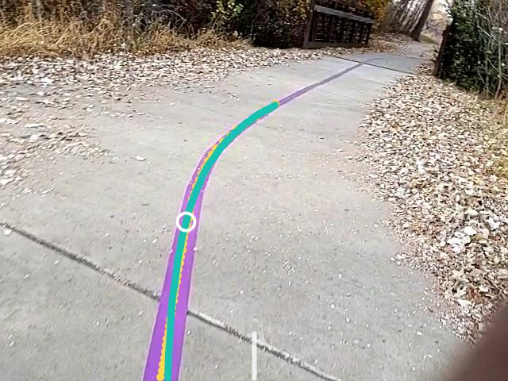
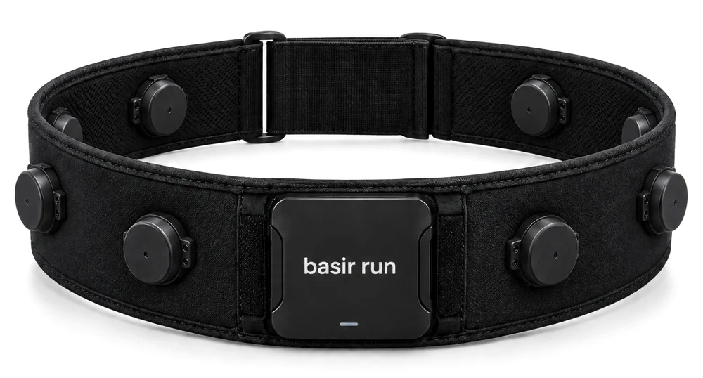

ضغطة تقرأ، وضغطة مطوّلة تنفّذ
لا يبدأ شيء ولا يتوقف بلمسة عابرة.
- صوت بشري مسجّل لكل زر وكل تنبيه، بالعربية.
- أزرار كبيرة وألوان عالية التباين لضعاف البصر.
- يعمل مع قارئ الشاشة في الهاتف.
تطبيق يساعد العدّائين ذوي الإعاقة البصرية على إيجاد طريقهم. يرى الأرض بكاميرا الهاتف، يجد الخطوط والمنحنيات، ويرسم الطريق الأمثل للجري، ثم يوجّهك بنبضات تشعر بها على صدرك.
مجاني · أندرويد 8 فما فوق

محرك الاكتشافكل شيء يجري على الهاتف نفسه، أثناء الجري، دون انتظار اتصال بالإنترنت.
على صدرك بإحكام، والكاميرا الخلفية إلى الأمام.
قبل كل جري يتأكد أن الكاميرا ترى الأرض وأن التحليل سريع بما يكفي، ثم يبدأ التوجيه وحده.
يبحث عن الخطوط والمنحنيات على الأرضية ويرسم الطريق الأمثل للجري أمامك.
باهتزاز تتعلّمه في دقائق، وبجمل صوتية قصيرة عند الحاجة فقط.
يلتقط الخط الإرشادي أو حدّ المسار مهما كان لونه، ما دام يختلف عن الأرض حوله.
يتتبّع انحناء المسار وينبّهك إلى المنعطف بنبضة هادئة قبل أن تصل إليه.
يتبع الخط، أو منتصف الحارة، أو يوازي الخط، أو يجد مساحة حرّة، ويلتف حول العائق حين يلزم.
يقدّر المسافة إلى ما أمامك، ويميّز الجسم القريب، والعائق على مستوى الرأس، والدرج النازل أو الحفرة.
يحلل البيئة أمامك بأقل زمن ممكن وبأكبر عدد من الإطارات في الثانية، على الهاتف نفسه، فيصلك التوجيه في لحظته.
يعوّض ميلان الهاتف واهتزاز خطواتك حتى لا تتقافز الإشارات.
القصيرة تعني صحّح الآن، والطويلة الهادئة تعني استعد لمنعطف، والتوقف يسبق كل شيء. هذه مدد النبضات الفعلية في التطبيق، بالميلّي ثانية.
نبضة قصيرة أو متوسطة أو طويلة أو طويلة جداً، بزرّين: نبضة أقصر ونبضة أطول.
اهتزاز خفيف أو متوسط أو قوي. بعد كل تغيير يهتز نبضة ثم نبضتين لتتأكد أنك تميّزهما.
ستة أسئلة بالاهتزاز وحده، ويلزم خمس إجابات صحيحة. إذا لم تنجح يطيل التطبيق النبضة لك.
لا يبدأ شيء ولا يتوقف بلمسة عابرة.
يحدد موقعك ويجهّز لك كل شيء، والإرسال بضغطتك.
جهاز اهتزاز منفصل يُلبس حول الخصر، يعمل بلغة اهتزازات متكاملة وبشدّات دقيقة، فتشعر بالاتجاه في المكان الصحيح من جسمك.
هذه النسخة النهائية للجهاز المنفصل، وسيتم توفيره قريباً بسعر مناسب. للمساعدة في عملية توفير المنتج وتصنيعه، يرجى التواصل عبر البريد الإلكتروني:
yousefgattal75@gmail.com
